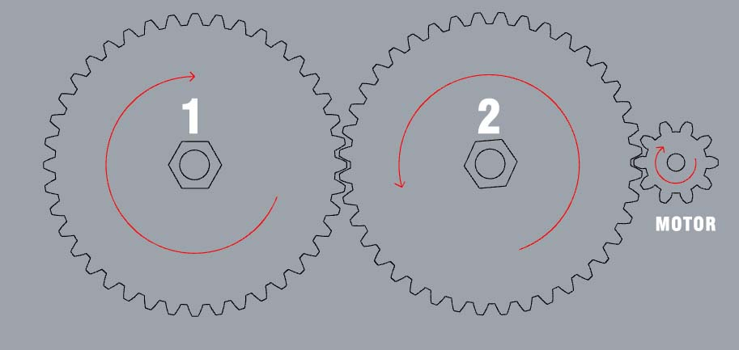
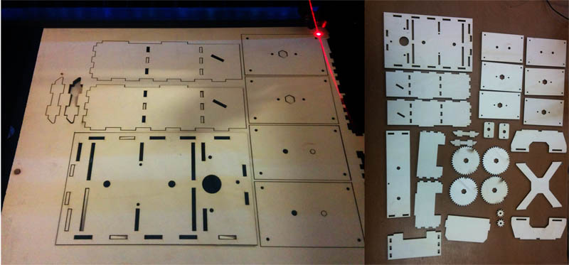
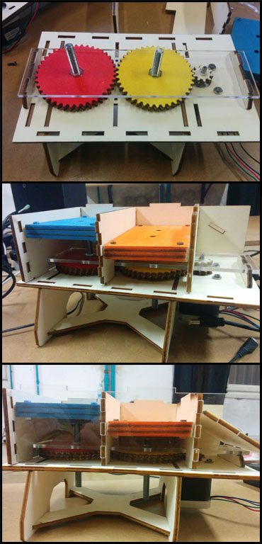
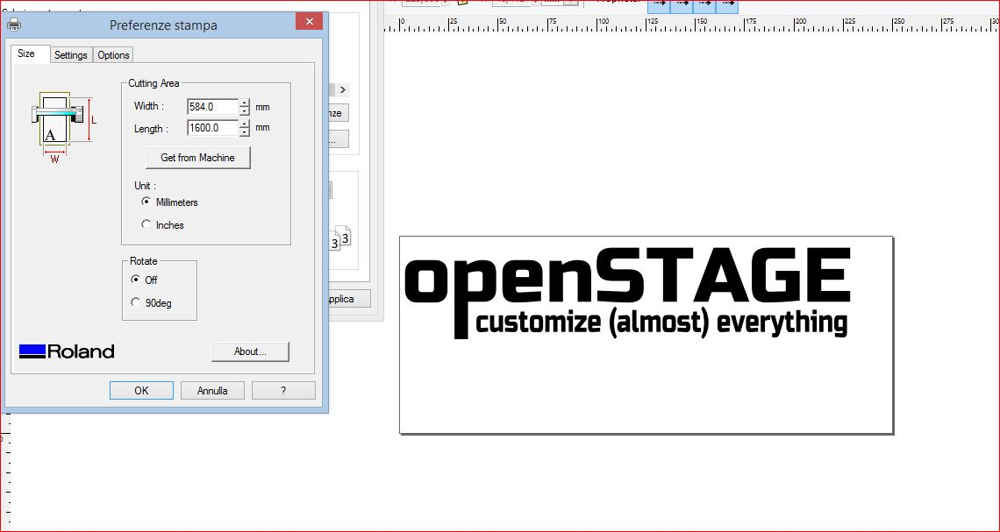
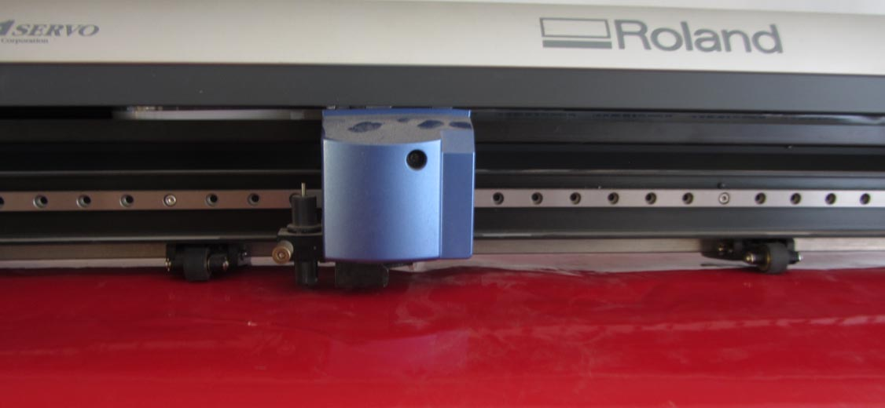
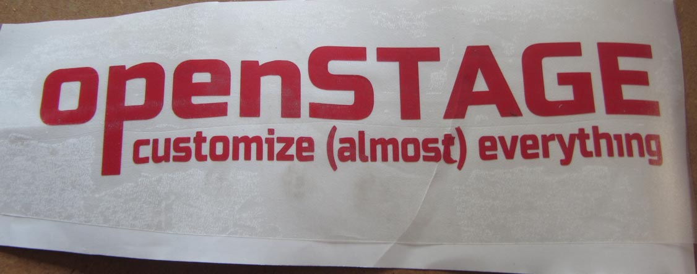
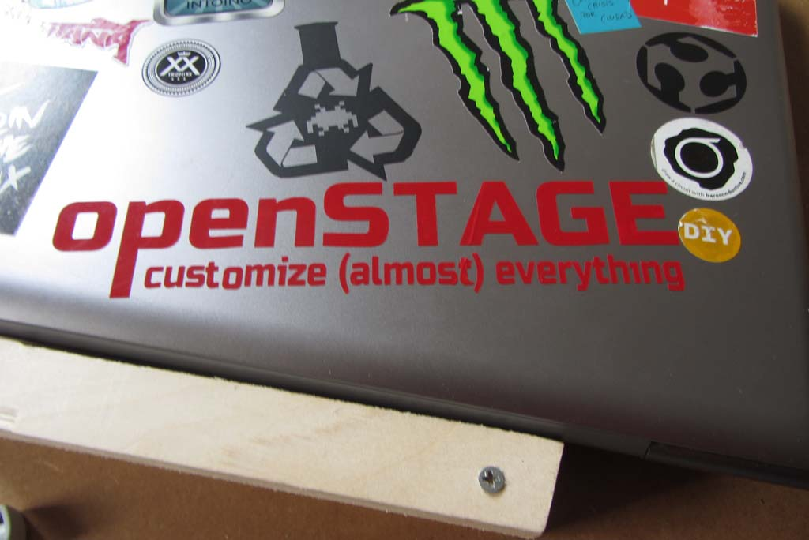

Exercise 3
11.02.2015
Computer-Controlled cutting
Assignment
- Design, make, and document a press-fit construction kit
Project
Thinking about the possibility of my final project, I decided to explore the SLS world
I designed in Rhino all the mechanics, to do this week assignment I designed a system based on 2 chambers that move in the opposite direction.
I used a simple joint to assemble all the parts excluding almost completely the use of screws.
To design the mechanics I used Rhinoceros and Inkscape to create the gear box.
SLS
Selective Laser Sintering (SLS) is an additive manufacturing technique that uses a laser as the power source to sinter powdered material.
Sub-division
- Goal
- Motion
- Laser cutting
- Assembling
Goal

MOTION
Many solution discovered on internet, uses one motor for each chamber, my intent was to use a single motor, so I've created gears using Inkscape following this tutorial:
Then I've imported the gear in Rhinoceros to create the simulation ov motion. With this configuration I can use a single motor; when the motor turn CW, the gear n°2 turns CCW and the n°1 turns CW, this allows the ascent and descent of the 2 platform

Laser cutting
To make all the parts of my project I used a WORKLINE laser cutter.
This machine has a work area of 1200x900mm and a 150W CO2 laser tube.

ASSEMBLING
Assembling the project it was raelly easy, I coloured some parts to evidences the most important pieces ant their movement; all the parts are linked with simple finger joint in order to use less screws possible

Video
This is a short video of the first movement test
Useful links
Vinyl Cutter
In this exercise I have to demonstrate that I'm also able to use a Vinyl cutter, in our lab we have a Roland GX-24to cut something I started drawing the logo of my final project in Inkscape

To make the file correct for the machine I had to convert the text in path and check the file put the visualization mode in OUTLINE.
Then the plotter work in easy mode and you can select it like a normal printer.
When you start the machine it ask if you have a roll or a single sheet of vinyl, I had to put the small roller behind the withe stripes then I selected the single sheet and I checked the size pushing the botton "get from machine".
Pushing Print button it start to cut
when the plotter finish the job is possible to release the vinyl and start to remove the parts out of the graphics, then we have to put the application tape

I pushed much the application tape to stitch well the vinyl and application and then finally put the sticker on my laptop!!
